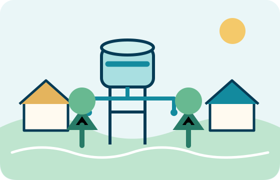

Infraestrutura comunitária
Água para Todos
Planejar soluções comunitárias de acesso à água, como sistemas de armazenamento, pontos de distribuição e, quando houver viabilidade técnica e autorização, captação por poços com bombeamento eficiente.
Como a comunidade pode contribuir
Participando do diagnóstico das necessidades, das reuniões de planejamento e da organização dos cuidados e da manutenção do sistema.